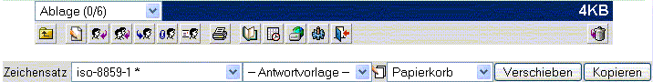
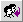
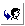
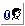
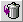

| Wenn Sie eine Nachricht öffnen
, ändert sich die Toolbar, um Ihnen mehr Möglichkeiten zur Bearbeitung zu geben.
Nachrichtentoolbar:

Referenztabelle:
| Icon |
Name |
Aktion |
|
|
Zurück zur Nachrichtenliste |
Geht zurück zur Übersicht der eingegangenen Nachrichten |
 |
Neue Nachricht schreiben |
Ermöglicht das Erstellen einer neuen Nachricht |
 |
Antworten |
Antwortet dem Absender |
|
 |
Antwort an Alle |
Antwortet an alle, an die diese Mail geschickt wurde. Also AN und CC |
|
 |
Weiterleiten als Anhang |
leitet die Nachricht weiter |
|
 |
Weiterleiten als Anhang |
leitet die Nachricht als Anhang weiter |
|
|
Weiterleiten als Anhang |
leitet die Nachricht im Orginal weiter |
 |
Drucken |
Zeigt eine ausdruckbare Version in einem Fenster an. Also ohne
Toolbar, um mit dem Browser einen sauberen Ausdruck zu ermöglichen. |
 |
Adressbuch |
Öffnet das Adressbuch zum Bearbeiten |
 |
Kalender |
öffnet den Kalender |
|
|
WebDisk |
Öffnet die WebDisk-Applikation |
 |
Benutzereinstellungen |
Erlaubt die persönlichen Einstellungen zu ändern. |
 | Logout |
Webmail verlassen |
|
 |
In den Papierkorb verschieben |
verschiebt die Nachricht in den Papierkorb. |
Zusätzliche Nachrichtenicons:
| Icon |
Name |
Aktion |
|
|
Importieren in das Addressbuch |
fügt den Absender in das Adressbuch ein. |
 |
Blockiere Absender |
fügt automatisch einen Filter hinzu, um Nachrichten dieses Absenders zu blockieren |
 |
SMTP-Relay blockieren |
Blockiert alle Nachrichten, die von diesem Server kommen. |
Es gibt noch eine zusätzliche kleine Toolbar unter der Nachrichtentoolbar:
Sie können den Zeichensatz für die Darstellung auswählen.
Sie können mit dem zweiten Dropdownmenü eine
Antwortvorlage auswählen. Haben Sie eine Vorlage ausgewählt, ist es
möglich eine Antwort mit der gewählten Vorlage zu erstellen. Haben Sie
keine Vorlagen erstellt, wählen Sie das Icon zum Erstellen von Vorlagen
(
 ), dann können Sie Vorlagen erstellen oder ändern. Zum Anlegen neuer Vorlagen siehe Einstellungstoolbar. ), dann können Sie Vorlagen erstellen oder ändern. Zum Anlegen neuer Vorlagen siehe Einstellungstoolbar.
Sollten Sie im Entwurfsordner sein, bearbeitet dieses Icon die aktuelle Nachricht (siehe
Verwalten von Ordnern), und legt keine neue Nachricht an. |